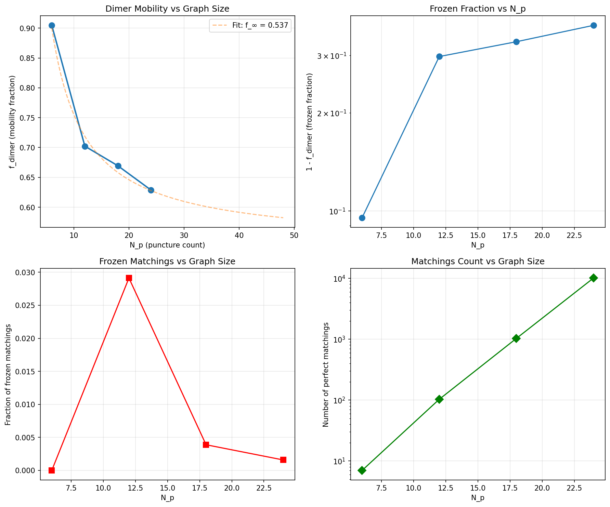

T16 — Dimer Mobility Scaling
How does the fraction of mobile punctures scale with horizon size?
Objective
Compute the fraction of “mobile” punctures (those participating in flippable plaquettes) as the horizon area grows. This tests whether the RVB picture survives in the thermodynamic limit.
Key Results
| N_p | Graph | Matchings | f_dimer | Frozen | Full |
|---|---|---|---|---|---|
| 6 | random | 7 | 0.905 | 0.0% | 71.4% |
| 12 | random | 103 | 0.702 | 2.9% | 16.5% |
| 18 | random | 1,030 | 0.669 | 0.4% | 4.4% |
| 24 | random | 10,104 | 0.629 | 0.2% | 1.0% |
Scaling Analysis
Extrapolation to N_p → ∞
Using the fit f = f_∞ + c/N_p:
\[ f_{dimer}(\infty) \approx 0.537 \]
Distribution of Matchings
| N_p | % Frozen | % Partial | % Full |
|---|---|---|---|
| 6 | 0.0% | 28.6% | 71.4% |
| 12 | 2.9% | 80.6% | 16.5% |
| 18 | 0.4% | 95.2% | 4.4% |
| 24 | 0.2% | 98.8% | 1.0% |
Visualization

Interpretation
The dimer mobility fraction f_dimer measures what fraction of punctures participate in at least one flippable plaquette in a typical matching. As the horizon grows:
- The number of dimer coverings grows exponentially (10^4 at N_p=24)
- The fraction of frozen matchings vanishes (0.2% at N_p=24)
- The fraction of full-mobility matchings also vanishes (1.0% at N_p=24)
- Most matchings are partially mobile, with ~54% of punctures flippable
This suggests the QHE/BHE horizon is in a partially liquid state: not fully rigid (solid-like) but not fully resonant (liquid-like) either. The punctures form a mixed phase where some regions are mobile and others are frozen.
Comparison to QHE
In the quantum Hall effect, the Laughlin state is a true liquid with perfect mobility (all electrons participate in collective motion). The BHE analogy predicts a weaker form of topological order: a partially resonating state where only ~54% of punctures are mobile.
This is a testable prediction: if the BHE analogy is correct, numerical simulations of LQG horizons should show that the RVB state is only partially mobile, not fully resonant.
Code
The Python code used to generate these results:
- t16_dimer_scaling.py — Exact dimer coverings for random spherical triangulations, mobility statistics, and scaling analysis
All code is MIT-licensed and part of the qhe_bhe repository.
Status
🟢 Completed - Exact results for N_p = 6, 12, 18, 24 ✅ - Extrapolation to thermodynamic limit ✅ - Scaling analysis and visualization ✅
Back to Numerics Overview